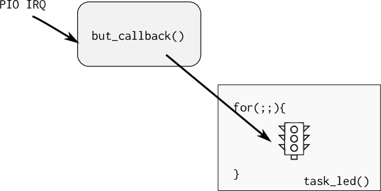
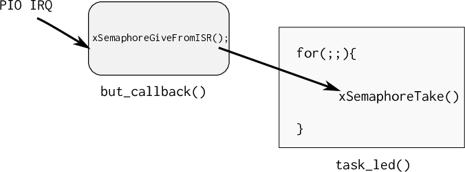

RTOS - freeRTOS¶
Embedded FM - episódio 175
How Hard Could It Be?
Jean Labrosse of Micrium (@Micrium) spoke with us about writing a real time operating system (uC/OS), building a business, and caring about code quality.
Neste laboratório iremos trabalhar com o uso de um sistema operacional de tempo real (RTOS) para gerenciarmos três LED e três botões (vamos refazer a entrega do tickTackTock porém agora com o uso do SO).
O sistema operacional a ser utilizado é o FreeRtos (www.freertos.org), um sistema operacional muito utilizado pela industria, sendo o segundo sistema operacional (20%) mais utilizado em projetos embarcados, perdendo só para o Linux embarcado.
LAB¶
| Pasta |
|---|
Lab5-RTOS-LED |
- Executar uma demo de RTOS
- Entender e modificar o exemplo
- Criar uma task que controla o LED1 do OLED
- Criar um semáforo que é liberado pelo botão do OLED1
Início¶
(45 minutos)
Objetivo: Entender as tarefas de um RTOS e fazer pequenas modificações no código
OLED1
Plugue a placa OLED1 no EXT1, vamos usar seus botões e LEDs.
Iremos trabalhar com o exemplo do FreeRTOS que a Atmel disponibiliza para a placa SAME70-XPLD, esse exemplo já inclui um projeto com as configurações iniciais do OS e um código exemplo que faz o LED da placa piscar a uma frequência determinada.
Código exemplo
- Copie o código exemplo
Same70-Examples/RTOS/RTOS-LEDpara a pasta da entrega do seu repositórioLAB5-RTOS-LED - Vamos modificar esse código exemplo.
Terminal¶
Esse exemplo faz uso da comunicação UART para debug de código (via printf), para acessar o terminal no atmel estúdio clique em:
-
No atmel studio:
 View Terminal Window
View Terminal Window -
Configure o terminal para a porta COM correta (verificar no windows) para operar com um BaudRate de 115200.
Info
Caso não tenha essa opção, instale o pacote extra do microchip studio
Tarefa
- Compile e grave o código no uC
- Abra o terminal e analise o output (baudrate 115200).
- Veja o LED piscar! Mágico
Entendendo o exemplo¶
Esse exemplo cria inicialmente 2 tarefas: task_monitor e task_led. A primeira serve como monitor do sistema (como o monitor de tarefas do Windows/Linux), enviando via printf informações sobre o estado das tarefas do sistema embarcado. A segunda serve para gerenciar o LED e o faz piscar a uma taxa de uma vez por segundo.
task_led¶
A task_led possui a implementação a seguir:
/**
* \brief This task, when activated, make LED blink at a fixed rate
*/
static void task_led(void *pvParameters)
{
UNUSED(pvParameters);
for (;;) {
LED_Toggle(LED0);
vTaskDelay(1000);
}
}
Notem que a função possui um laço infinito (for (;;){}), tasks em um RTOS não devem retornar, elas executam como se estivessem exclusividade da CPU (assim como um código bare-metal que não deve retornar da função main). A função LED_Toggle é na verdade um macro que faz o LED piscar, usando uma série de funções do PIO-ASF que não usamos no curso (podemos aqui usar a nossa função de pisca led).
A função vTaskDelay() faz com que a tarefa fique em estado de blocked (permitindo que outras tarefas utilizem a CPU) por um determinado número de ticks. Essa função é diferente da delay_ms() que bloqueia a CPU para sua execução. Deve-se evitar o uso de funções de delay baseadas em "queimar" clocks na tarefas de um RTOS, já que elas agem como um trecho de código a ser executada.
A função vTaskDelay() faz com que o RTOS libere processamento para outras tarefas durante o tempo especificado em sua chamada. Esse valor é determinado em ticks. Podemos traduzir ticks para ms, usando o define portTICK_PERIOD_MS como no exemplo a seguir que faz os leds piscarem a cada 2 segundos:
/**
* \brief This task, when activated, make LED blink at a fixed rate
*/
static void task_led(void *pvParameters)
{
/* Block for 2000ms. */
const TickType_t xDelay = 2000 / portTICK_PERIOD_MS;
for (;;) {
LED_Toggle(LED0);
vTaskDelay(xDelay);
}
}
Modifique
- Modifique o firmware com o código exemplo anterior
- Programe o uC.
- Analise o resultado.
O Tick de um RTOS define quantas fezes por segundo o escalonador irá executar o algoritmo de mudança de tarefas, no ARM o tick é implementado utilizando um timer do próprio CORE da ARM chamado de system clock ou systick, criado para essa função.
Por exemplo, um RTOS que opera com um tick de 10ms irá decidir pelo chaveamento de suas tarefas 100 vezes por segundo, já um tick configurado para 1ms irá executar o escalonador a uma taxa de 1000 vezes por segundo. Trechos de código que necessitam executar a uma taxa maior que 1000 vezes por segundo (tick = 1ms) não devem ser implementados em tasks do RTOS mas sim via interrupção de timer.
A configuração da frequência do tick assim como o mesmo é implementando está no arquivo do projeto: config/FreeRTOSConfig.h:
....
#define configTICK_RATE_HZ ( 1000 )
....
#define xPortSysTickHandler SysTick_Handler
Note
-
O impacto do tick na função
vTaskDelayé que a mesma só pode ser chamada com múltiplos inteiros referente ao tick. -
Não temos uma resolução tão boa quanto o TimerCounter ou RTT.
-
Quanto maior a frequência de chaveamento mais vezes/segundo o OS necessita salvar e recuperar o contexto, diminuindo assim sua eficiência.
-
Frequência máxima recomendada para o freertos em uma ARM e a de 1000 Hz
Task Monitor¶
Essa task é responsável por enviar pela serial (terminal) informações sobre o estado interno do sistema operacional e suas tarefas, ela possui um formato semelhante ao da task_led porém na sua execução (que acontece 1 vez por segundo já que nosso TICK_RATE_HZ é 1000) coleta o número de tarefas e suas listas e faz o envio via printf [2].
Note
Note que a função também está em um laço infinito! Nunca terminando de executar.
/**
* \brief This task, when activated, send every ten seconds on debug UART
* the whole report of free heap and total tasks status
*/
static void task_monitor(void *pvParameters)
{
static portCHAR szList[256];
UNUSED(pvParameters);
for (;;) {
printf("--- task ## %u", (unsigned int)uxTaskGetNumberOfTasks());
vTaskList((signed portCHAR *)szList);
printf(szList);
vTaskDelay(1000);
}
}
Essa tarefa produz uma saída como a seguir [3]:
--- task ## 4 Monitor R 0 77 1
IDLE R 0 110 3
Led B 0 231 2
Tmr Svc B 4 225 4
Com a seguinte estrutura :
taskName Status Priority WaterMark Task ID
- taskName : nome dado a task na sua criação
- Status : status da task [3]:
- Suspended
- Ready
- Running
- Blocked
 {}
{}Tarefa
- Modifique a task monitor para executar uma vez a cada 3 segundos
- Programe o uC com essa modificação
- Valide
Criando tarefas¶
Criar uma tarefa é similar ao de inicializar um programa em um sistema operacional, mas no caso devemos indicar para o RTOS quais "funções" irão se comportar como pequenos programas (tarefas). Para isso devemos chamar a função xTaskCreate que possui a seguinte estrutura:
/**
* task. h
*
BaseType_t xTaskCreate(
TaskFunction_t pvTaskCode,
const char * const pcName,
uint16_t usStackDepth,
void *pvParameters,
UBaseType_t uxPriority,
TaskHandle_t *pvCreatedTask
);
*
* Create a new task and add it to the list of tasks that are ready to run.
*
* xTaskCreate() can only be used to create a task that has unrestricted
* access to the entire microcontroller memory map. Systems that include MPU
* support can alternatively create an MPU constrained task using
* xTaskCreateRestricted().
*
*/
A criação das tasks monitor e LED são feitas da seguinte maneira (na função main):
xTaskCreate(task_monitor, "Monitor", TASK_MONITOR_STACK_SIZE, NULL,
TASK_MONITOR_STACK_PRIORITY, NULL);
xTaskCreate(task_led, "Led", TASK_LED_STACK_SIZE, NULL,
TASK_LED_STACK_PRIORITY, NULL);
O primeiro parâmetro da xTaskCreate é o ponteiro da função que será lidada como uma task. A segunda é o nome dessa tarefa, a terceira é o tamanho da stack que cada task vai possuir, o quarto seria um ponteiro para uma estrutura de dados que poderia ser passada para a task em sua criação, o quinto a sua prioridade e o último é um ponteiro e retorna uma variável que pode ser usada para gerencias a task (deletar, pausar).
O tamanho da stack da tarefa e sua prioridade estão definidos no próprio main.c:
#define TASK_MONITOR_STACK_SIZE (2048/sizeof(portSTACK_TYPE))
#define TASK_MONITOR_STACK_PRIORITY (tskIDLE_PRIORITY)
#define TASK_LED_STACK_SIZE (1024/sizeof(portSTACK_TYPE))
#define TASK_LED_STACK_PRIORITY (tskIDLE_PRIORITY)
A cada tarefa pode ser atribuída uma prioridade que vai de 0 até configMAX_PRIORITIES - 1, onde configMAX_PRIORITIES está definido no arquivo de configuração FreeRTOSConfig.h, 0 é menor prioridade.
taskIDLE_PRIORITY
É a menor prioridade!
#define tskIDLE_PRIORITY ( ( UBaseType_t ) 0U )
Note
Uma das dúvidas mais comum no uso de RTOS é o quanto de espaço devemos alocar para cada tarefa, e essa é uma pergunta que não existe um resposta correta, caso esse valor seja muito grande podemos estar alocando um espaço extra que nunca será utilizado e caso pequena, podemos ter um stack overflow e o firmware parar de funcionar.
A melhor solução é a de executar o programa e analisar o consumo da stack pelas tasks ao longo de sua execução, tendo assim maiores parâmetros para a sua configuração.
Piscando LED1 OLED¶
Vamos agora criar uma nova tarefa e fazer ela controlar o LED1 da placa OLED, nessa tarefa vocês devem fazer o LED1 piscar por 5 vezes e então ficar 3 segundos em piscar, depois voltar a piscar novamente!
Tarefa
- Crie uma função similar a task LED só que com nome:
task_led1- não esqueça do
while(1)e nem de usar ovTaskDelay() - faça essa função iniciar o pino do LED1 como saída (
PA0) - faça essa função piscar o LED 3 vezes a cada 3 segundos
- usar
vTaskDelay()
- usar
- não esqueça do
- Criei os defines:
#define TASK_LED1_STACK_SIZE (1024/sizeof(portSTACK_TYPE))#define TASK_LED1_STACK_PRIORITY (tskIDLE_PRIORITY)
- E então criei a task no rtos, dentro do
main(){}xTaskCreate(task_led1, "Led1", TASK_LED1_STACK_SIZE, NULL, TASK_LED1_STACK_PRIORITY, NULL);
Power Save mode ?¶
Uma forma muito simples de conseguirmos diminuir o consumo energético de um sistema embarcado com RTOS é o de ativar os modos de baixo consumo energético (powersave/ sleep mode) quando o SO estiver na tarefa idle. A tarefa idle é aquela executada quando nenhuma outra tarefa está em execução. Sempre que essa tarefa idle for chamada a o RTOS irá executar a função a seguir já definida no main.c:
/**
* \brief This function is called by FreeRTOS idle task
*/
extern void vApplicationIdleHook(void)
{
}
Porém ainda devemos ativar essa funcionalidade no arquivo de configuração, via o define: configUSE_IDLE_HOOK.
- No arquivo de configuração
FreeRTOSConfig.hmodifique:
- #define configUSE_IDLE_HOOK 0
+ #define configUSE_IDLE_HOOK 1
Com isso podemos controlar o modo sleep na função vApplicationIdleHook.
Tarefa
- Entre em sleepmode quando em idle
- Dentro da função
vApplicationIdleHookchamepmc_sleep(SAM_PM_SMODE_SLEEP_WFI)
Note que devemos entrar em um modo de sleep que o timer utilizado pelo tick consiga ainda acordar a CPU executar, caso contrário o RTOS não irá operar corretamente já que o escalonador não será chamado. O timer usado pelo escalonador é o System Timer, SysTick.
API - Comunicação entre task / IRQ¶
(30 minutos)
Objetivo : Comunicar a tarefa do LED para ser executada via a interrupção (callback) do botão da placa .
Uma das principais vantagens de usar um sistema operacional é o de usar ferramentas de comunicação entre tarefas ou entre ISR e tarefas, em um código baremetal fazemos esse comunicação via variáveis globais (buffers, flags, ...), essa implementação carece de funcionalidades que o RTOS irá suprir, tais como :
-
Semáforo (semaphore) É como uma flag binária, permitindo ou não a execução de uma task, funciona para sincronização de tarefas ou para exclusão mútua (multual exclusion), sem nenhum tipo de prioridade.
-
Mutex: Similar aos semáforos porém com prioridade de execução (mutex alteram a prioridade da tarefa)
-
MailBox ou Queues: Usado para enviar dados entre tarefas ou entre ISR e Tasks
[5] : https://www.freertos.org/Embedded-RTOS-Binary-Semaphores.html
Botão / semaphore¶
Iremos implementar um semáforo para comunicação entre o callback do botão 1 do OLED e a tarefa que faz o controle do LED (da placa), o callback do botão irá liberar o semáforo para a tarefa do LED executar em um formato: produtor-consumidor.

- Consulta: xSemaphoreGiveFromISR
Adicione os defines e a variável global que indica o semáforo:
Modifique
- Inclua os defines:
#define BUT1_PIO PIOD #define BUT1_PIO_ID 16 #define BUT1_PIO_IDX 28 #define BUT1_PIO_IDX_MASK (1u << BUT1_PIO_IDX) - Inclua a variável global a seguir que será o semáforo. (no começo do arquivo main.c)
/** Semaforo a ser usado pela task led
tem que ser var global! */
SemaphoreHandle_t xSemaphore;
Agora vamos incluir a função de callback recém criada
para liberar o semáforo xSemaphore que a task_led está aguardando:
Modifique
/**
* callback do botao
* libera semaforo: xSemaphore
*/
void but1_callback(void){
printf("but_callback \n");
BaseType_t xHigherPriorityTaskWoken = pdFALSE;
xSemaphoreGiveFromISR(xSemaphore, &xHigherPriorityTaskWoken);
}
Note que estamos usando uma função chamada de xSemaphoreGiveFromISR
para fazer a ponte entre a interrupção do botão (algo que o RTOS não controla)
com a task que o RTOS controla.
Toda vez que o botão for apertado o mesmo libera o semáforo (vira verde).
Agora vamos modificar a função task_led para inicializar um semáforo, e configura
o botão da placa OLED para funcionar com interrupção chamanado a função: but1_callback
sempre que houver uma borda de descida no pino que lê o botão.
A tarefa agora fica no while(1) aguardando o semáforo xSemaphore que será
liberado pelo callback. Sempre que houver a leitura do semáforo, o mesmo torna-se
vermelho.
Modifique
static void task_led(void *pvParameters) {
/*
* We are using the semaphore for synchronisation so we create a binary
* semaphore rather than a mutex. We must make sure that the interrupt
* does not attempt to use the semaphore before it is created!
*/
xSemaphore = xSemaphoreCreateBinary();
if (xSemaphore == NULL)
printf("Falha em criar o semaforo \n");
/*
* devemos iniciar a interrupcao no pino somente apos termos alocado
* os recursos (no caso semaforo), nessa funcao inicializamos
* o botao e seu callback
*/
pmc_enable_periph_clk(BUT1_PIO_ID);
pio_configure(BUT1_PIO, PIO_INPUT, BUT1_PIO_IDX_MASK, PIO_PULLUP);
pio_handler_set(BUT1_PIO, BUT1_PIO_ID, BUT1_PIO_IDX_MASK, PIO_IT_FALL_EDGE, but1_callback);
pio_enable_interrupt(BUT1_PIO, BUT1_PIO_IDX_MASK);
NVIC_EnableIRQ(BUT1_PIO_ID);
NVIC_SetPriority(BUT1_PIO_ID, 4); // Prioridade 4
for (;;) {
// aguarda semáforo com timeout de 500 ms
if( xSemaphoreTake(xSemaphore, ( TickType_t ) 500 / portTICK_PERIOD_MS) == pdTRUE ){
LED_Toggle(LED0);
} else {
// time out
}
}
}
Visão geral
Para implementarmos um semáforo precisamos primeiramente definir uma variável global que será utilizada pelo sistema operacional para definir o endereço desse semáforo (global):
SemaphoreHandle_t xSemaphore;
Devemos antes de usar o semáforo, fazermos sua criação/inicialização :
/* Attempt to create a semaphore. */
xSemaphore = xSemaphoreCreateBinary();
Uma vez criado o semáforo podemos esperar a liberação do semáforo via a função:
xSemaphoreTake(xSemaphore, Tick);
- xSemaphore O semáforo a ser utilizado
- Tick : timeout (em ticks) que a função deve liberar caso o semáforo não chegue. Se passado o valor 0, a função irá bloquear até a chegada do semáforo.
Para liberarmos o semáforo devemos usar a função de dentro da interrupção/callback:
xSemaphoreGiveFromISR(...);
Note
Note o ISR no final da função, isso quer dizer que estamos liberando um semáforo de dentro de uma interrupção. Caso a liberação do semáforo não seja de dentro de uma interrupção, basta utilizar a função xSemaphoreGive

C - Praticando¶
Vamos praticar um pouco, agora faça o mesmo para o LED1 da placa OLED, para iso você deverá:
- criar task que faz o LED1 piscar
- botão do LED1 libera semáforo para a
task_led1 - LED1 pisca após botão apertado
Note que o botão faz o LED1 piscar, e mantém o que já estava sendo feito antes: o LED da placa precisa continuar piscando.
B - Semáforo entre tasks¶
O LED2 pisca apenas após o LED1 ter piscado. Para isso você deverá:
- criar
task_led2que controla o LED2 - fim da
task_led1libera semáforo para atask_led2
Prioridade
A prioridade de qualquer interrupção que não a que o freertos gerencia não pode ser maior que 3 (quanto menor maior a prioridade), portanto configurem a interrupção no botão com no mínimo prioridade 4.
// exemplo:
NVIC_SetPriority(OLED_BUT2_PIO_ID, 4)
Ilustração do que deve acontecer:
\ botao OLED1
\
x -----> LED1 pisca -----> LED2 pisca
A - Várias dependências¶
O LED3 pisca apenas após o LED2 ter piscado e o botão 3 da placa OLED1 ter sido pressionado.
Lembre de criar uma task e um semáforo para o Led3: task_led3
\ botao1 OLED1 \ botao3 OLED
\ \
x -----> LED1 pisca -----> LED2 pisca ---------- x -----> LED3 pisca
Preencher ao finalizar o lab